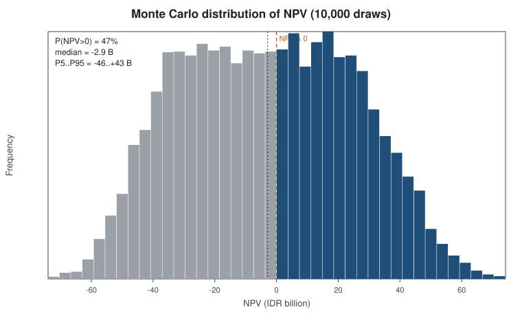
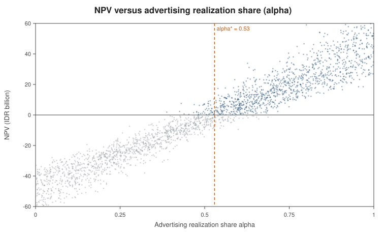
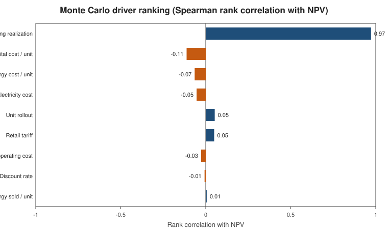
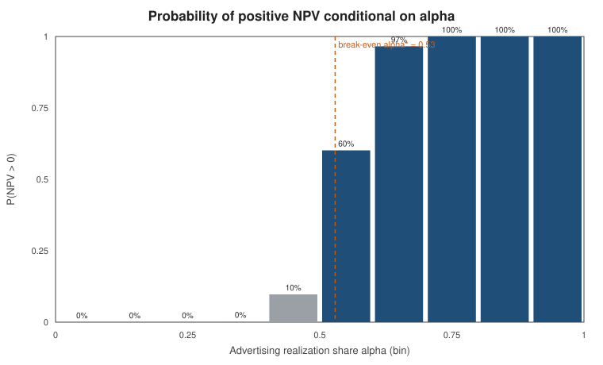

Monte Carlo visuals — Maya ChargeHub feasibility audit
Reproduction of the audit model (Table 1 + Eq 1–3), 10,000 draws, seed 20261019.
Deterministic anchors reproduce the paper exactly: NPV@α=1 = +44.31 B, NPV@α=0 = −49.79 B,
break-even α* = 0.53, advertising rank-correlation = 0.97.
Caveat: the Monte Carlo spread (P(NPV>0), median, percentiles) uses
reconstructed distribution parameters because the original paper did not publish them. The deterministic
figures above are exact; the distribution shape is illustrative until the authors' real params/seed are supplied.
1. Distribution of NPV

2. NPV vs advertising realization share (α)

3. Driver ranking (Spearman rank correlation)

4. P(NPV>0) conditional on α
